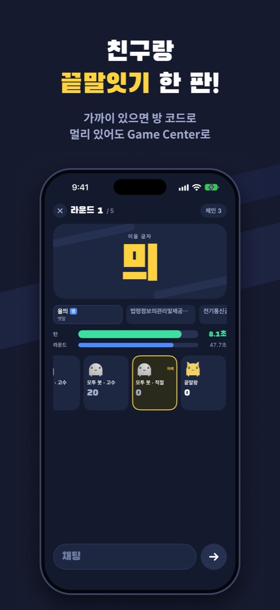
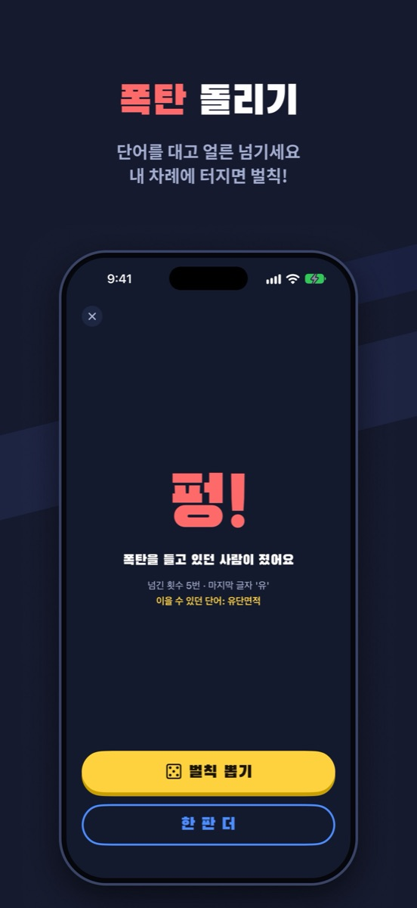

모투: 끝말잇기 파티 게임
친구와 폰으로 하는 끝말잇기 · 폭탄 돌리기·룰렛 벌칙 · iOS
모투는 친구들과 폰으로 함께 하는 한국어 끝말잇기 파티 게임입니다. 43만 개가 넘는 단어 사전으로 단어가 맞는지 바로 판정하고, 진 사람의 벌칙은 폭탄 돌리기·마블 룰렛·벌칙 원판으로 정합니다. 로그인도 광고도 없습니다.
App Store에서 받기

이렇게 놀 수 있어요
- 개인전: 근처 친구와는 6자리 방 코드로, 멀리 있는 친구와는 Game Center 초대로 함께 합니다.
- 팀전: 2~4팀으로 나눠 번갈아 단어를 잇고, 팀원 점수를 합쳐 승부를 냅니다.
- 연습전: 1~5단계 로봇 '모투 봇'과 혼자 실력을 기릅니다.
벌칙 게임
- 폭탄 돌리기: 폰 한 대를 돌려 가며 단어를 잇습니다. 틀릴수록 폭탄이 빨라지고, 터질 때 들고 있던 사람이 벌칙을 받습니다.
- 마블 룰렛: 다 같이 단어를 쳐서 공을 넣고 뺀 뒤, 남은 공을 굴려 벌칙을 정합니다.
- 벌칙 원판: 딱밤, 노래 한 소절, 성대모사 같은 기본 벌칙을 고르거나 직접 써서 돌립니다.
규칙 고르기
라운드 수, 제한 시간, 미션 글자, 외래어 금지, 복합어, 주제별 단어를 방장이 정합니다. 이길 때마다 캐릭터 모레미의 꾸미기 아이템이 하나씩 열리고, 모두 29종입니다.
자주 묻는 질문
- 친구랑 폰으로 같이 끝말잇기 하는 앱이 있나요?
- 모투가 그런 앱입니다. 근처에 있는 친구와는 6자리 방 코드로, 멀리 있는 친구와는 Game Center 초대로 함께 끝말잇기를 할 수 있는 iOS 게임입니다.
- 술자리나 모임에서 쓸 벌칙 게임으로 쓸 수 있나요?
- 네. 폰 한 대를 돌려 가며 단어를 잇는 폭탄 돌리기, 단어로 공을 넣고 빼서 굴리는 마블 룰렛, 딱밤·노래 한 소절 같은 벌칙을 고르는 벌칙 원판이 들어 있습니다.
- 혼자서도 끝말잇기를 할 수 있나요?
- 연습전에서 1~5단계 로봇 '모투 봇'과 혼자 할 수 있습니다.
- 끝말잇기에서 두음법칙이 인정되나요?
- 모투에서는 인정됩니다. 예를 들어 '력'으로 끝나면 '역'으로 시작해도 되고, 이어 갈 글자와 두음법칙 글자를 화면에 함께 보여 줍니다.
- 단어가 맞는지는 어떻게 판정하나요?
- 끄투(KKuTu) 사전에 우리말샘 단어를 더한 43만 개가 넘는 단어 사전으로 바로 판정합니다. 사전에 없는 단어, 이을 글자가 다른 단어, 이미 나온 단어는 받지 않습니다.
- 팀을 나눠서 할 수 있나요?
- 팀전에서 2~4팀으로 나눠 번갈아 단어를 잇고, 팀원 점수를 합쳐 승부를 냅니다. 팀마다 인원수가 같아야 시작합니다.
- 로그인이나 회원가입이 필요한가요?
- 필요 없습니다. 광고도 없고 개인정보도 수집하지 않습니다. 인터넷 플레이만 각 기기의 Game Center 로그인이 필요합니다.
- 안드로이드에서도 할 수 있나요?
- 지금은 iPhone용(iOS)만 있습니다.
문제가 생겼을 때
근처 친구 방이 안 보여요.
두 기기가 같은 Wi-Fi에 있거나 가까이 있어야 합니다. 설정 > 개인정보 보호 및 보안 > 로컬 네트워크에서 모투가 켜져 있는지 확인하고, 방장에게 받은 6자리 방 코드를 입력하세요. 참가자 모두 같은 버전의 앱이어야 합니다.
인터넷 플레이가 안 돼요.
모든 기기에서 Game Center에 로그인해야 하고, 서로 Game Center 친구여야 초대할 수 있습니다.
제가 쓴 단어가 안 받아져요.
사전에 없는 단어이거나, 이을 글자가 다르거나, 이미 나온 단어일 수 있습니다. 방 설정(외래어 금지, 주제 등)도 확인해 보세요. 빠진 단어는 이슈로 알려 주세요.
문의·버그 신고
GitHub 이슈에 남겨 주세요. 기기 모델, iOS 버전, 어떤 화면에서 무엇을 했는지 적어 주시면 빨리 고칠 수 있습니다.
개인정보
모투는 개인정보를 수집하지 않습니다. 개인정보처리방침
소스 코드와 라이선스
모투는 오픈 소스 끝말잇기 게임 KKuTu(JJoriping)를 바탕으로 만들었고, GPL-3.0으로 소스를 공개합니다: github.com/m2kyungmin/motu. 사용한 소리·그림·글꼴의 출처는 앱 안의 크레딧과 저장소의 README에 있습니다.